第3章
物体受部分正比于速度部分正比于速度平方的阻力的运动
命题11 定理8
如果物体受到部分正比于其速度部分正比于其速度的平方的阻力，在均匀的介质中只受到惯性力的推动而运动；而且把时间按算术级数划分：则反比于速度的量，在增加某个给定量后，变为几何级数。
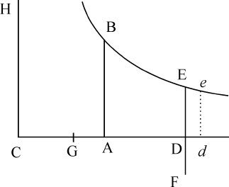
以C为中心，CADd 和CH为直角渐近线画双曲线BEe ，令AB，DE，de 平行于渐近线CH。在渐近线CD上令A，G为已知点；如果由双曲线面积ABED表示的时间均匀增加，则以GD为其倒数的长度DF与给定直线CG所共同组成的长度CD所表示的速度按几何级数增加。
因为，令小面积DEed
为时间的最小增量，则Dd
反比于DE，因而正比于CD。所以 的减量
的减量
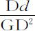
（由第二编引理2），也正比于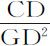
或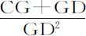
，即正比于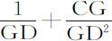
。所以，当时间ABED均匀地增加给定间隔EDde 时，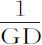
以与速度相同的比率减小。因为速度的减量正比于阻力，即（由题设），正比于两个量的和，其中之一正比于速度，另一个正比于速度的平方；而 的减量正比于量
的减量正比于量 和
和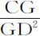
，其中第一项是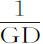
本身，后一项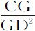
正比于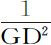
：所以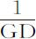
正比于速度，二者的减量是类似的。如果量GD反比于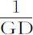
，并增加给定量CG；则当时间ABED均匀增加时，其和CD按几何级数增加。证毕。
推论Ⅰ．如果点A和G已知，双曲线面积ABED表示时间，则速度由GD的倒数
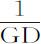
表示。推论Ⅱ．取GA比GD等于任意时间ABED开始时速度的倒数比该时间结束时速度的倒数，则可以求出点G。求出该点后，则可由任意给定的其他时间求出速度。
命题12 定理9
在相同条件下，如果将掠过的距离分为算术级数，则速度在增加一个给定量后变为几何级数。
设在渐近线CD上已知点R，作垂线RS与双曲线相交于S，令掠过的距离以双曲线面积RSED表示；则速度正比于长度GD，该长度与给定线CG组成的长度CD，当距离RSED按算术级数增加时，按几何级数减小。
因为，空间增量EDde 为给定量，GD的减量短线Dd 反比于ED，因而正比于CD；即正比于同一个CD与给定长度CG的和。而在掠过给定空间间隔Dde E所需的正比于速度的时间中，速度的减量正比于阻力乘以时间，即正比于两个量的和，反比于速度，这两个量中之一正比于速度，另一个正比于速度的平方；因而正比于两个量的和，其中一个是给定的，另一个正比于速度。所以，速度以及直线GD二者的减量正比于给定量与一个减小量的乘积；而因为两个减量相似，两个减小的量，即速度与线段GD，也总是相似的。
证毕。
推论Ⅰ．如果以长度GD表示速度，则掠过的距离正比于双曲线面积DESR。
推论Ⅱ．如果任意设定点R，则通过取GR比GD等于开始时的速度比掠过距离RSED后的速度，则可以求出点G。求出点G后，即可由给定速度求出距离；反之亦然。
推论Ⅲ．由于由给定时间（通过命题11）可以求出速度，而（由本命题）距离又可以由给定速度推出，所以由给定时间可以求出距离；反之亦然。
命题13 定理10
设一物体受竖直向下的均匀重力作用沿一直线上升或下落；受到的阻力同样部分正比于其速度，部分正比于其平方：如果作几条平行于圆和双曲线直径且通过其共轭直径端点的直线，而且速度正比于平行线上始自一给定点的线段，则时间正比于由圆心向线段端所作直线截取的扇形面积；反之亦然。
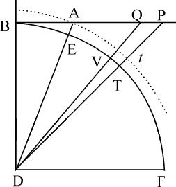
情形1．首先设物体上升，以D为圆心，以任意半径DB画圆的四分之一BETF，通过半径DB的端点B作不定直线BAP平行于半径DF。在该直线上设有已知点A，取线段AP正比于速度。由于阻力的一部分正比于速度，另一部分正比于速度的平方，令整个阻力正比于AP2 ＋2BA·AP。连接DA，DP，与圆相交于E和T，令DA2 表示重力，使得重力比P处的阻力等于DA2 比AP2 ＋2BA·AP；则整个上升时间正比于圆的扇形EDT。
作DVQ，分割出速度AP的变化率PQ，以及对应于给定时间变化率的扇形DET的变化率DTV；则速度的减量PQ正比于重力DA2 与阻力AP2 ＋2BA·AP的和；即（由欧几里得《几何原本》第二卷命题12），正比于DP2 。而正比于PQ的面积DPQ正比于DP2 ，面积DTV比面积DPQ等于DT2 比DP2 ，因而DTV正比于给定量DT2 。所以，面积EDT减去给定间隔DTV后，均匀地随着未来时间的比率减小，因而正比于整个上升时间。
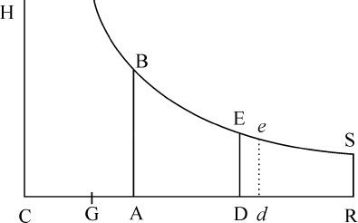
情形2．如果物体的上升速度像前一情形那样以长度AP表示，则阻力正比于AP2 ＋2BA·AP；而如果重力小得不足以用DA2 表示，则可以这样取BD的长度，使AB2 －BD2 正比于重力，再令DF垂直且等于DB，通过顶点F画出双曲线FTVE，其共轭半径为DB和DF，曲线与DA相交于E，与DP，DQ相交于T和V；则整个上升时间正比于双曲线扇形TDE。
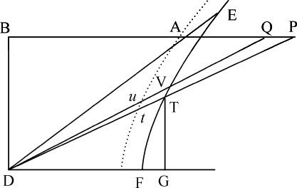
因为在已知时间间隔中产生的速度减量PQ正比于阻力AP2 ＋2BA·AP与重力AB2 －BD2 的和，即正比于BP2 －BD2 ，但面积DTV比面积DPQ等于DT2 比DP2 ；所以，如果作GT垂直于DF，则上述比等于GT2 或者GD2 －DF2 比BD2 ，也等于GD2 比BP2 ，由相减法知，等于DF2 比BP2 －BD2 。所以，由于面积DPQ正比于PQ，即，正比于BP2 －BD2 ，因而面积DTV正比于给定量DF2 。所以，面积EDT在每一个相等的时间间隔内，通过减去同样多的间隔DTV，将均匀减小，因而正比于时间。
证毕。
情形3．令AP为下落物体的速度，AP2 ＋2BA·AP为阻力，BD2 －AB2 为重力，角DBA为直角。如果以D为中心，B为顶点，作直角双曲线BETV与DA，DP和DQ的延长线相交于E，T，V；则该双曲线的扇形DET正比于整个下落时间。
因为速度的增量PQ，以及正比于它的面积DPQ，正比于重力减去阻力的剩余，即正比于
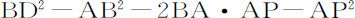
或BD2 －BP2 。而面积DTV比面积DPQ等于DT2 比DP2 ；所以等于GT2 或GD2 －BD2 比BP2 ；也等于GD2 －BD2 ，由相减法，等于BD2 比BD2 －BP2 。所以，由于面积DPQ正比于BD2 －BP2 ，面积DTV正比于给定量BD2 。所以面积EDT在若干相等的时间间隔内，加上同样多的间隔DTV后，将均匀增加，因而正比于下落时间。
证毕。
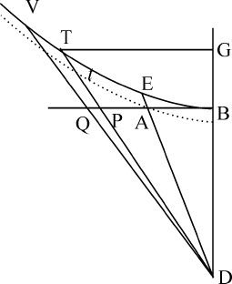
推论．如果以D为中心，以DA为半径，通过顶点A作一个弧At 与弧ET相似，其对角也是ADT，则速度AP比物体在时间EDT内在无阻力空间由于上升所失去或由于下落所获得的速度，等于三角形DAP的面积比扇形DAt 的面积；因而该速度可以由已知的时间求出。因为在无阻力的介质中速度正比于时间，所以也正比于这个扇形；在有阻力介质中，它正比于该三角形；而在这二种介质中，当它很小时，趋于相等，扇形与三角形也是如此。
附注
还可以证明这种情形，物体上升时，重力小得不足以用DA2 或AB2 ＋BD2 表示，但又大于以AB2 －DB2 来表示，因而只能用AB2 表示。不过我在此拟讨论其他问题。
命题14 定理11
在相同条件下，如果按几何级数取阻力与重力的合力，则物体上升或下落所掠过的距离，正比于表示时间的面积与另一个按算术级数增减的面积的差。
取AC（在三个图中）正比于重力，AK正比于阻力；如果物体上升，这二者取在点A的同侧，如果物体下落，则取在两侧。作垂线Ab ，使它比DB等于DB2 比4BA·CA；以CK，CH为直角渐近线作双曲线b N；再作KN垂直于CK，则面积Ab NK在力CK按几何级数取值时按算术级数增减，所以，物体到其最大高度的距离正比于面积Ab NK减去面积DET的差。
因为AK正比于阻力，即，正比于AP2 ·2BA·AP；设任意给定量Z，取AK等于
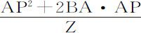
；则（由本编引理2）AK的瞬KL等于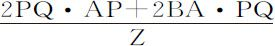
或者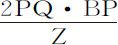
，而面积Ab NK的瞬等于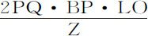
或者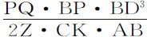
。情形1．如果物体上升，重力正比于AB2 ＋BD2 ，BET是一个圆，则正比于重力的直线AC等于
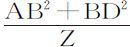
，而DP2 或AP2 ＋2BA·AP＋AB2 ＋BD2 等于AK·Z＋AC·Z或CK·Z；所以面积DTV比面积DPQ等于DT2 或DB2 比CK·Z。情形2．如果物体上升，重力正比于AB2 －BD2 ，则直线AC等于
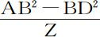
，而DT2 比DP2 等于DF2 或DB2 比BP2 －BD2 或AP2 ＋2BA·AP＋AB2 －BD2 ，即，比AK·Z＋AC·Z或CK·Z。所以面积DTV比面积DPQ等于DB2 比CK·Z。情形3．由相同理由，如果物体下落，因而重力正比于BD2 －AB2 ，直线AC等于
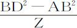
；则面积DTV比面积DPQ等于DB2 比CK·Z，与前述相同。所以，由于这些面积总是取这同一个比值，如果不用不变的面积DTV表示时间的瞬，而代之以任意确定的矩形BD·m ，则面积DPQ，即
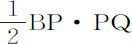
比BD·m 等于CK·Z比BD2 ，因而PQ·BD3 等于2BD·m ·CK·Z，而以前求出的面积Ab NK的瞬KLON变成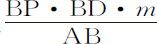
。由面积DET减去它的瞬DTV或BD·m ，则余下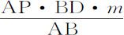
。所以，瞬的差，即面积的差的瞬，等于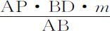
；所以（因为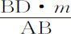
是给定量）正比于速度AP；即正比于物体在上升或下落中掠过距离的瞬。所以，二面积的差，与正比于瞬，且与之同时开始又同时消失的距离的增减，是成正比的。证毕。
推论．如果以M表示面积DET除以直线BD所得到的长度；再取一个长度V，使它比长度M等于线段DA比线段DE；则物体在有阻力介质中上升或下落的总距离，比在无阻力介质中相同时间内由静止开始下落的距离，等于上述面积差比
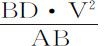
；因而可以由给定时间求出。因为在无阻力介质中距离正比于时间的平方，或正比于V2 ；又因为BD与AB是已知的，也即正比于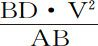
。该面积等于面积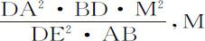
的瞬是m ；所以该面积的瞬是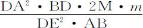
。而该瞬比上述二面积DET与Ab NK的差的瞬，即比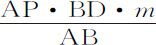
，等于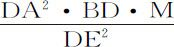
比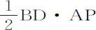
，或等于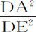
乘以DET比DAP；所以，当面积DET与DAP极小时，比值为1。所以，当所有这些面积都极小时，面积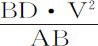
以及面积DET与Ab NK的差，有相等的瞬；所以二者相等，由于在下落开始与上升终了时的速度，因而在两种介质中所掠过的距离，是趋于相等的，所以二者相比等于面积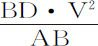
比面积DET与Ab NK的差；而且，由于在无阻力介质中距离连续正比于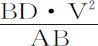
，而在有阻力介质中，距离连续正比于面积DET与Ab NK的差；由此必然推导出在二种介质中，相同时间内所掠过的距离的比，等于面积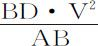
比面积DET与Ab NK的差。证毕。
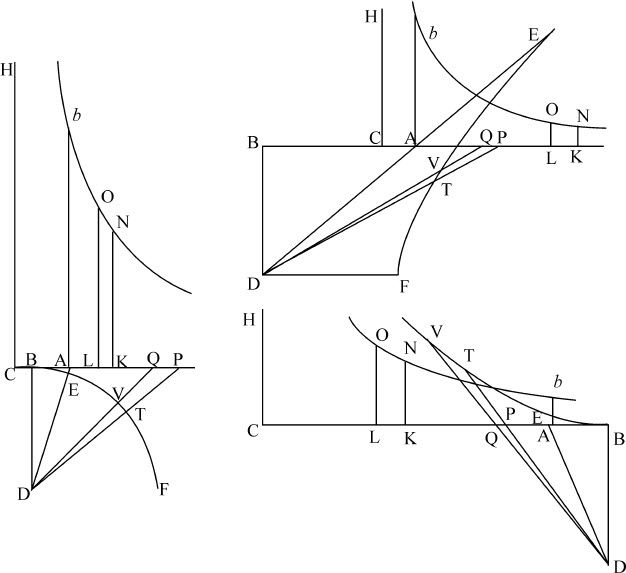
附注
球体在流体中受到的阻力部分来自粘滞性，部分来自摩擦，部分来自介质密度。其中来自流体密度的那部分阻力，我已讨论过，是正比于速度的平方的；另一部分来自流体的粘滞性，它是均匀的，或正比于时间的瞬；因此，我们现在可以进而讨论这种物体运动，它受到的阻力部分来自一个均匀的力，或正比于时间的瞬，部分正比于速度的平方。不过早在前面的命题8和9及其推论中，就已经为解决这种问题彻底扫清了道路。因为在这些命题中，可以将上升物体的重力所带来的均匀阻力，代之以介质的粘滞性所产生的均匀阻力，前提是物体只受惯性力的推动；而当物体沿直线上升时，可把均匀力叠加在重力上，当物体沿直径下落时，则从中减去。还可以进而讨论受到部分是均匀的，部分正比于速度，部分正比于同一速度的平方的阻力的物体的运动。而我在前述的命题13和14中为此铺平了道路，其中，只要用介质粘滞性产生的均匀阻力代替重力，或者像以前那样，代之以二者的合力。我们还有其他问题要讨论。